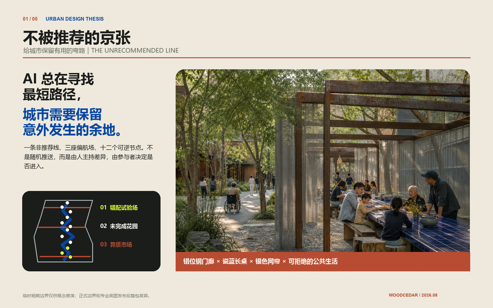
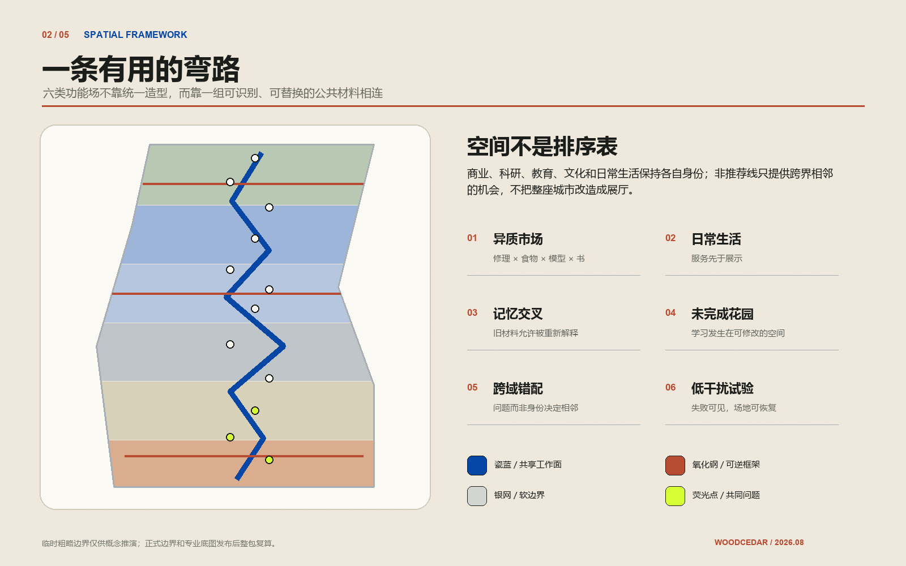
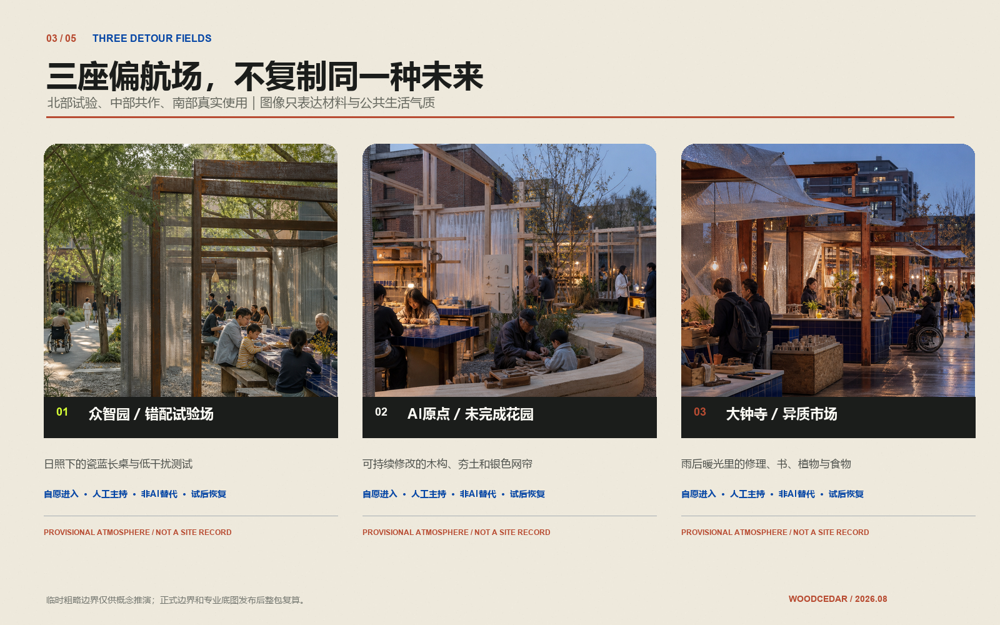
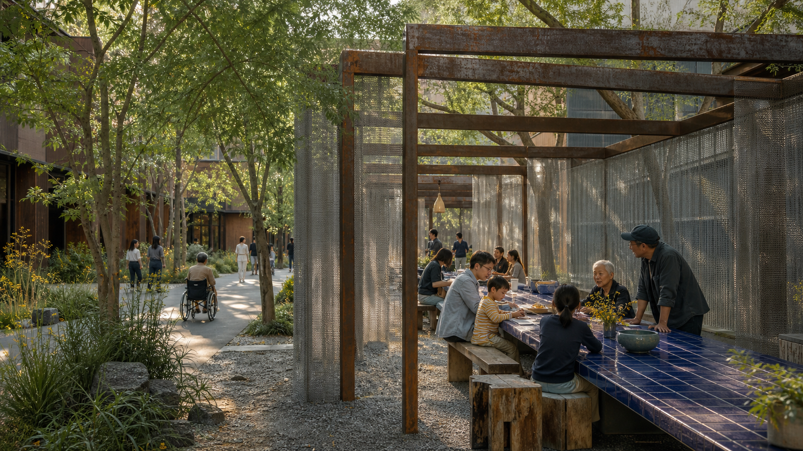
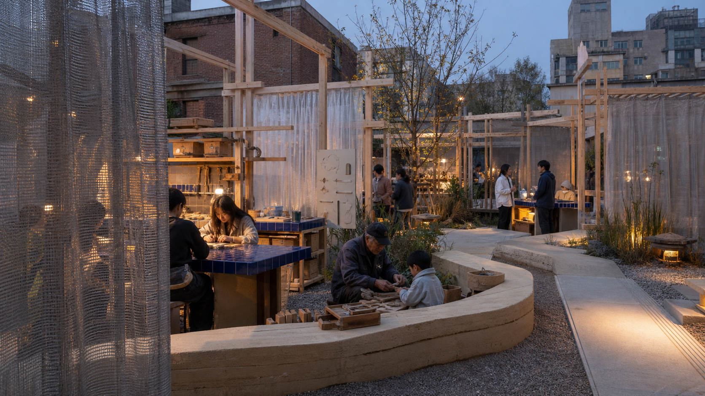
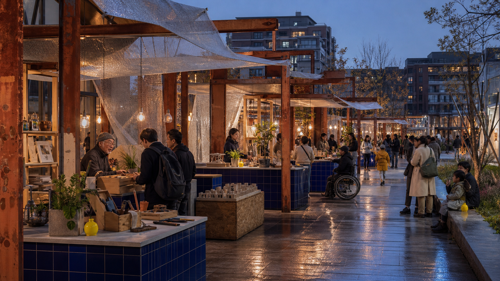
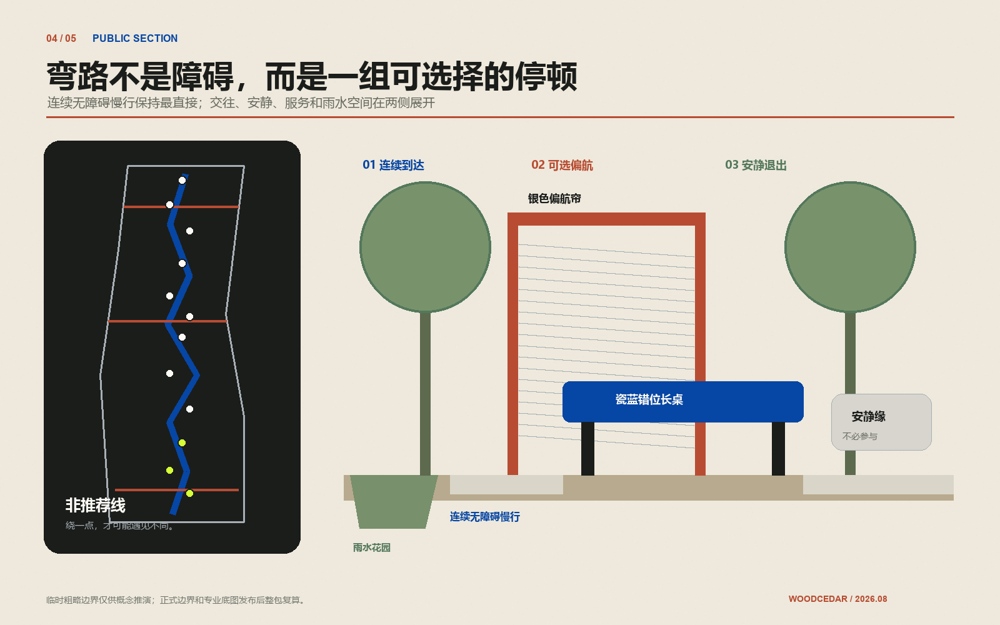
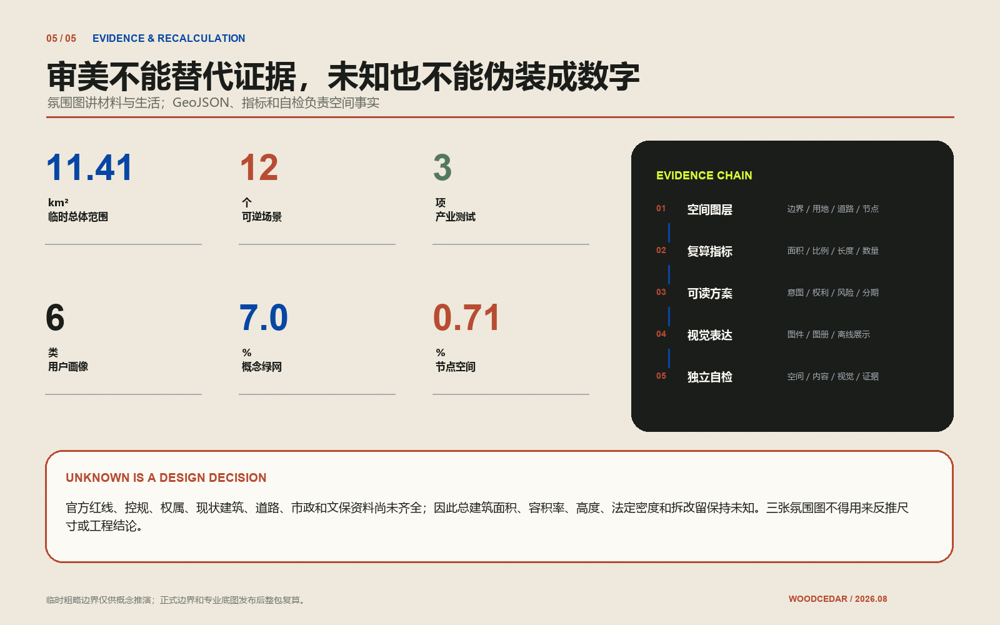

不被推荐的京张｜THE UNRECOMMENDED LINE：给城市保留有用的弯路
当算法不断缩短路径，城市反而需要保留有用的弯路。方案以一条非推荐线、三座偏航场、六种空间材料和十二个可逆节点，让异质知识与日常经验发生意外连接。
不被推荐的京张｜THE UNRECOMMENDED LINE：给城市保留有用的弯路
AI擅长把相似的人匹配得更准，也擅长把每段旅程变成最短路径；城市最难替代的价值，却常常藏在没有被推荐的座位、绕远的一段树荫和意外相邻的摊位里。本方案不再造一个封闭的“AI园区”，而是把京张遗址公园及周边地区设想为一条有用的弯路：研究者遇到真实生活问题，居民能够改写技术命题，企业在公开而可控的环境里验证产品，文化机构让技术重新理解地方记忆。
空间结构是“一条非推荐线、三座偏航场、两翼协作、十二个可逆节点”。非推荐不是随机推送，而是由人提出问题、由主持人邀请差异、由参与者决定是否进入；没有个体跟踪，也不把居民当作未经同意的测试对象。所有场景坚持自愿加入、人工主持、最少数据、可解释、可退出和公开复盘。当前边界为仓库提供的临时粗略多边形，所有面积与空间判断仅供概念比较，绝不是官方红线或审批结论。
设计依据与资料清单
方案首先遵循征集公告与智能体任务书，并以仓库资料包、来源登记表和事实包为导航：[source:OFFICIAL-ANNOUNCEMENT]、[source:AGENT-TASKBOOK]、[source:SITE-PACKAGE]、[source:SOURCE-REGISTRY]、[source:PROCESSED-FACT-PACK]。总体范围和三处重点区来自临时边界资料 [source:BOUNDARY-SOURCE]、[source:KEY-AREA-SOURCE]；相应图层明确写有 official_boundary=false 与 provisional_constraint。
本方案依据六项标准组织工作：[standard:PROJECT-OFFICIAL-ANNOUNCEMENT]、[standard:PROJECT-AGENT-OPEN-CALL-TASKBOOK]、[standard:MOHURD-URBAN-DESIGN-MEASURES]、[standard:MOHURD-CONTROL-DETAILED-PLANNING]、[standard:MNR-LAND-USE-CLASSIFICATION-GUIDE]、[standard:MOHURD-ARCH-DESIGN-DEPTH-2016]。它们用于确定任务和表达深度，不代表本方案已取得任何审批。
资料缺口同样是设计依据。正式边界、法定控规、道路红线、轨道控制、权属、现状建筑、文保、市政、防洪、消防和公共服务基线尚未齐备。因此本方案只提出空间原型、试点规则和深化方法；建筑高度、总建筑规模、法定容积率、道路断面和拆改留结论保持待定。现状与缺口诊断见 [depth:existing_conditions_diagnosis]、[data:geometry/constraints.geojson#CONSTRAINTS]。

三层范围工作框架
三层范围共享同一个问题：怎样让AI创新与日常城市彼此校正，而不是各自封闭。
| 层级 | 任务 | 不被推荐的京张的回答 | | --- | --- | --- | | 统筹研究范围，约43.6平方公里 | 研究产业生态、未来城市形态与全球协作 | 建立“问题发布—跨界组队—小规模试验—公开复盘—空间更新”的循环 | | 总体设计范围，临时复算约11.41平方公里 | 形成城市更新、产业空间、交通市政与风貌框架 | 用非推荐线、六类功能带、三条东西偏航支线和蓝绿慢行网络组织空间 | | 三处重点区域，任务书约368.4公顷 | 达到重点片区详细设计表达 | 众智园“错配试验场”、AI原点“未完成花园”、大钟寺“异质市场”分工协作 |
统筹层定义跨机构机制，总体层把机制放进连续空间，重点区用真实场景验证。三层对应 [depth:three_level_scope_framework]、[depth:overall_spatial_structure]，空间索引见 [data:geometry/site_boundary.geojson#SITE-001] 与三处临时重点区 [data:geometry/key_areas.geojson#PROV-KEY-001]、[data:geometry/key_areas.geojson#PROV-KEY-002]、[data:geometry/key_areas.geojson#PROV-KEY-003]。

统筹研究范围产业与未来城市研究
“不被推荐的京张”不是反对技术，而是反对城市只剩下一套排序。高校、企业、社区、文化机构和公共部门不以组织名录为终点，而以“谁拥有问题、谁能提供不同知识、谁承担后果”组成短期团队。每个公开命题都经过权利与数据审查，先在小范围试验，失败也进入公共档案。
七个国际案例给出方法启发，但不被机械复制：新加坡榜鹅数字园区说明实体空间与开放数字平台可以共同服务产学协作 [source:CASE-PUNGGOL]；巴塞罗那城市创新实验室说明城市试点需要单一入口与公共价值判断 [source:CASE-BARCELONA]；赫尔辛基Kalasatama说明小规模、短周期、真实生活环境的敏捷试验可降低风险 [source:CASE-KALASATAMA]；巴黎萨克雷说明科研、产业、交通、自然和生活质量要同时建设 [source:CASE-PARIS-SACLAY]；伦敦Knowledge Quarter说明跨大学、企业和文化机构的“网络经纪人”本身是一种重要服务 [source:CASE-KNOWLEDGE-QUARTER]；CitCom.ai说明复杂技术应在接近真实城市条件的场景中验证 [source:CASE-CITCOM-AI]；NIST AI风险管理框架提醒所有试点都要持续治理、测量和复核 [source:CASE-NIST-AI-RMF]。
由此形成五段循环：每季公开征集城市问题；人工策展人将不同背景的参与者组成“错配长桌小组”；十二个节点提供测试、共学和展示；评估既记录效果，也记录负担、误伤和退出；成熟方案进入更新项目，失败案例进入下一季学习。建议设“京张网络经纪人”小组，不替代行政审批，只负责连接、主持、公开记录和转介。
名称“THE UNRECOMMENDED LINE”直接回应算法时代：它不是一条未经批准的新线，而是一套让不同知识相邻的公共空间方法。中文“不被推荐的京张”保留一点反常识和邀请感。标志由两条原本平行、随后轻微错位的线和一个意外出现的小点组成；视觉系统使用纸张米白、瓷蓝、氧化钢红、银灰和极少量荧光黄绿。空间材料借鉴Superkilen把公共参与转化为空间物件的策展方法 [source:CASE-SUPERKILEN]，也借鉴The Bentway把数字公共性理解为人与场所及规则之间关系的观点 [source:CASE-BENTWAY-DIGITAL-PUBLIC]。两翼仍为“知识转化翼”和“日常验证翼”，不是新增行政分区。
总体设计范围城市更新与控规深度城市设计
一条南北“非推荐线”串联三座偏航场，三条东西支线连接高校、园区、社区与轨道站点。它不追求一眼望到底，而通过长桌、错位门廊、银色网帘、安静花园和异质摊位制造可选择的停顿；它不是道路或轨道红线，而是步行、骑行、公共活动和导视的概念联系 [data:geometry/roads.geojson#ROAD-ENCOUNTER-SPINE]。六类连续功能带覆盖临时边界：异质市场、日常生活、文化交叉、原点学习、开放交换和测试花园；相应面积由 [data:geometry/land_use.geojson#LU-MARKET-SOUTH] 等六个无重叠图斑复算。
更新不从大拆大建开始，而从四类动作开始：补连续步行与无障碍缺口；把边角地、首层和低效开放空间变为可逆节点；以六处概念建筑载体支持问题发布、测试、共学和市场；通过公共活动校验空间是否真正有用。统一构造语汇是可拆卸氧化钢框架、瓷蓝长桌、回收木、银色网帘、透水地面和低位暖光；它们用真实材料建立识别度，不依赖屏幕或“未来感”造型。用地完整性见 [depth:land_use_layout]，强度待定规则见 [depth:development_intensity_controls]，高度与体量方法见 [depth:height_massing_character]，拆改留前置条件见 [depth:retain_renovate_demolish]。
六处建筑轮廓仅是功能载体原型，包括开放问题馆、长椅实验室、未完成站台、技能交换所、城市转接台和意外市场 [data:geometry/buildings.geojson#BLDG-OPEN-QUESTION]。它们不对应现状楼宇；正式测绘、权属、文保和结构资料齐备后，优先在保留建筑中嵌入，其次轻改造，最后才考虑可拆卸新建。
重点区域详细设计

众智园：错配试验场
定位为产业测试与公共问题错配场。清河侧形成连续开放界面，入口布置“错误入口”，中部以瓷蓝长桌和错位钢门廊组成可预约试验院，沿非推荐线设置公开基准墙。核心项目包括跨域命题交换、机器人互操作接力和清河低碳观察。测试前公布目的、时长、数据和退出方式；测试中设置人工安全员；测试后公开成功、失败与扰动。临时范围见 [data:geometry/key_areas.geojson#PROV-KEY-001]。

氛围图来源与使用边界见 [source:RENDER-V3-QUESTION-YARD]。
北京AI原点社区：未完成花园
定位为近校共学与成果转化场。空间不展示“完成的未来”，而是用回收木框、夯土座椅、银色网帘和工具架形成可被居民、学生和创业者继续修改的花园。未完成站台承接成果发布，技能交换所连接法律、设计、工程和社区经验，安静边缘提供非AI参与路径。校区—园区—社区慢行联系必须在正式边界和交通条件下复核。临时范围见 [data:geometry/key_areas.geojson#PROV-KEY-002]。

氛围图来源与使用边界见 [source:RENDER-V3-UNFINISHED-GARDEN]。
大钟寺：异质市场
定位为真实使用与国际交往场。围绕轨道站点和四象限步行需求，组织异质市场、城市转接台和故障灯廊：修理、书籍、植物、食物原型和产品模型不按行业分区，而按“一个生活问题需要哪些不同能力”相邻。氧化钢框架、银色网棚、瓷蓝柜台和雨后低位暖光共同形成日夜可用的城市客厅。无障碍路线复测作为长期公共任务，结果进入更新清单。轨道、道路、商业和文保条件均待官方资料确认。临时范围见 [data:geometry/key_areas.geojson#PROV-KEY-003]。

氛围图来源与使用边界见 [source:RENDER-V3-STRANGE-MARKET]。
三处详细设计均覆盖功能、建筑载体、交通、公共空间、运营和退出条件，由 [depth:three_key_area_detailed_design] 统一检查。
AI 创新生态、人才画像与 AI+ 场景
六类使用者不是被系统自动画像的人，而是设计团队用来检查需求遗漏的角色：科研人员需要真实问题与可重复验证；创业团队需要低成本测试和规则说明；产业工程师需要跨系统接口与失效记录；周边居民需要不被打扰、可拒绝且有日常收益；高校学生需要跨专业合作与成果出口；国际访客及文化从业者需要可理解的地方叙事和多语协作。共计 [metric:persona_count] 六类。
十二个节点由 [data:geometry/public_space.geojson#ENCOUNTER-01] 至 [data:geometry/public_space.geojson#ENCOUNTER-12] 表达，共计 [metric:scenario_count]。前三项是产业测试验证场景，共计 [metric:industry_test_scenario_count]；其余为公共与文化场景。
| # | 场景 | 类型 | 服务对象与空间动作 | 权利边界 | | --- | --- | --- | --- | --- | | 01 | 跨域命题错配 | 产业测试 | 把科研、企业与社区问题匿名化后由人策展，众智园短期驻场 | 只处理自愿提交的问题，不建立个人推荐档案 | | 02 | 机器人互操作接力 | 产业测试 | 不同厂商设备在限定路线协作，公开故障与人工接管 | 封闭时段、人工安全员、设备日志去标识化 | | 03 | 无障碍路线复测 | 产业测试 | 行动不便者与导航团队共同走查断点 | 参与者控制记录内容，可选择纯人工路线 | | 04 | 错位长桌 | 公共场景 | 瓷蓝长桌把不同背景者围绕共同问题邀请到同一桌 | 不录音，参与者随时离开 | | 05 | 技能交换夜校 | 共学场景 | 居民教生活知识，工程师教工具，学生负责转译 | 不以技能高低排序，不强制使用AI | | 06 | 失败档案馆 | 文化场景 | 展示试点为何失败、谁受影响、怎样退出 | 先做权利审查，个人和企业可要求纠错 | | 07 | 京张记忆再讲述 | 文化场景 | 口述史与铁路空间隐喻形成可校正导览 | 文史内容经来源与文保复核 | | 08 | 一小时异质门诊 | 企业服务 | 法律、设计、无障碍和安全专家共同回应一个产品难题 | 预约授权，商业机密不进入公共记录 | | 09 | 儿童反向评审 | 教育场景 | 儿童用图画说明智能服务哪里难懂 | 监护同意，不采集人脸与行为轨迹 | | 10 | 夜间慢行照护 | 生活场景 | 人工巡查与匿名设施报修改善照明、导视和休息点 | 不进行身份识别与治安预测 | | 11 | 气候共享餐桌 | 公共场景 | 以热舒适、雨水和饮食议题连接居民与研究者 | 环境数据仅作区域统计 | | 12 | 全球弯路接力 | 国际场景 | 不同城市交换一个待解问题，以100小时短期协作回应 | 公开来源、许可和责任，不承诺直接实施 |
三个“AI朝圣地标”是错位门廊、未完成花园和故障灯廊，共计 [metric:landmark_count]。它们分别强调差异、持续修改和公开失败，不塑造技术崇拜。公共空间和场景治理由 [depth:blue_green_public_space]、[depth:risk_missing_data] 共同约束。
用地、建筑规模与拆改留方案
临时边界面积为 [metric:site_area_sqm]。六个功能图斑遵循现有用地分类代码，但只表达概念功能，不是法定调规：商业服务业用地约 [metric:land_use_05_sqm]，机关团体用地约 [metric:land_use_0702_sqm]，科研用地约 [metric:land_use_0802_sqm]，教育用地约 [metric:land_use_0803_sqm]，公园绿地约 [metric:land_use_1401_sqm]。六类面积合计与临时边界一致，图斑不重叠。
六处概念载体的建筑基底面积为 [metric:building_footprint_area_sqm]，占临时范围比例为 [metric:concept_building_coverage_ratio]。这两个指标只说明原型占地很轻，不是法定建筑密度。总建筑面积与容积率保持未知 [metric:floor_area_ratio]；正式控规、现状测绘与权属齐备前，不设高度、密度或总量结论。
拆改留采用“先辨认价值、再判断安全、后选择动作”的顺序：历史与公共价值明确的保留；结构可用、功能可转的改造；无建设必要的场景使用可拆卸设施；只有经专业评估确认无法保留且确有公共利益时才讨论拆除。当前六个建筑轮廓不能用于指定任何现实建筑的拆改留。
交通、轨道、市政与公共服务设施
交通策略由四条概念联系组成：南北非推荐线和三条东西偏航支线，共计约 [metric:road_length_m]。它们表达步行、骑行、无障碍与活动联系，不是道路中心线、红线或轨道线位。三处重点区优先检查轨道站点出入口、路口四象限、京张遗址公园跨路断点以及园区与社区之间的“最后五百米”。交通、轨道、慢行和停车深化见 [depth:traffic_rail_slow_parking]。
公共服务采用“小节点、共享后台、人工在场”。每座偏航场配置问题受理、权利与数据审查、无障碍替代、人工主持、急救与退出说明；端侧算力、储能、充电、排水和通信只作为待论证服务，不在缺少容量资料时承诺建设。市政与新基础设施深化见 [depth:municipal_new_infrastructure]。

蓝绿空间、公共空间与城市风貌
概念绿地网络面积约 [metric:green_space_area_sqm]，占临时范围约 [metric:green_ratio]；十二个圆形可逆节点合计约 [metric:public_space_area_sqm]，占比约 [metric:public_space_ratio]。绿网来自非推荐线与东西联系的缓冲示意，不代表现状绿地、河道蓝线或规划绿线；节点半径用于方案复算，不是施工尺寸。
公共空间采用四层剖面：连续慢行线负责到达；银色偏航檐提供遮阴、停留和可见活动；安静缘允许拒绝互动与低刺激休息；服务背面容纳设备、物流和人工值守。瓷蓝只用于共享工作面，氧化钢只用于可逆框架，荧光黄绿只标记需要共同回答的问题。所有节点试运行后可以缩小、移动或撤除。绿色网络见 [data:geometry/green_space.geojson#GREEN-ENCOUNTER-COMMONS]，公共空间见 [data:geometry/public_space.geojson#ENCOUNTER-01]。
风貌不追求统一的“科技蓝”。材料以可回收金属、木构和耐久铺装为建议，蓝绿双线贯穿导视，橙色只标记共同问题和安全提示。铁路道岔、站台和换乘只作为设计隐喻；未经可靠文史资料确认，不写成具体历史事实。
更新项目清单、实施政策与分期计划
| 编号 | 更新项目 | 先做什么 | 进入下一阶段的条件 | | --- | --- | --- | --- | | JZ-01 | 非推荐线断点走查 | 人工步行、骑行和无障碍复测 | 正式道路与交通条件确认 | | JZ-02 | 开放问题馆 | 临时问题征集台与人工策展 | 运营主体、权利和数据审查到位 | | JZ-03 | 机器人互操作接力场 | 限时封闭小试 | 安全评估与应急接管通过 | | JZ-04 | 清河测试花园 | 环境观察与可拆卸设施 | 河道、防洪、生态条件确认 | | JZ-05 | 未完成站台 | 小型成果发布与反向评审 | 权属、消防和人流评估通过 | | JZ-06 | 技能交换所 | 每月人工主持夜校 | 无障碍与长期排班落实 | | JZ-07 | 失败档案馆 | 线上线下公开复盘 | 纠错、撤回与版权机制生效 | | JZ-08 | 大钟寺异质市场 | 周末异质主题摊位 | 商业、交通、噪声和消防许可确认 | | JZ-09 | 四象限无障碍复测 | 参与式路线检查 | 轨道站点和路口工程条件确认 | | JZ-10 | 三地公共导视 | 临时蓝绿双线导视 | 文保、道路与公共空间许可确认 | | JZ-11 | 京张网络经纪人 | 小团队试运行一个季度 | 公开评估显示公共收益大于负担 | | JZ-12 | 全球问题接力 | 与一座城市做100小时试点 | 来源、许可、责任与退出约定完整 |
近期阶段覆盖北部临时分区，面积约 [metric:phase_1_area_sqm]，先做规则、人工主持和可拆卸试点；中期阶段面积约 [metric:phase_2_area_sqm]，缝合三座偏航场与慢行联系；长期阶段面积约 [metric:phase_3_area_sqm]，在前两阶段被证明有效后扩展全球协作。三期边界见 [data:geometry/phasing.geojson#PHASE-01]、[data:geometry/phasing.geojson#PHASE-02]、[data:geometry/phasing.geojson#PHASE-03]，由 [depth:renewal_project_list]、[depth:phasing_implementation] 检查。
长期运营包括四个固定节奏：每季“开放问题季”、每月“混合长椅周”、每年“百小时全球问题接力”、全年“公开失败档案”。任何场景连续两轮未产生公共收益、投诉无法解决或运营条件不足，就缩减或退出。
指标体系、面积复算与合规矩阵

所有已知指标由同一组空间图层或明确计数生成：临时总体范围 [metric:site_area_sqm]；五类用地面积 [metric:land_use_05_sqm]、[metric:land_use_0702_sqm]、[metric:land_use_0802_sqm]、[metric:land_use_0803_sqm]、[metric:land_use_1401_sqm]；概念建筑基底和比例 [metric:building_footprint_area_sqm]、[metric:concept_building_coverage_ratio]；绿地网络面积和比例 [metric:green_space_area_sqm]、[metric:green_ratio]；公共空间面积和比例 [metric:public_space_area_sqm]、[metric:public_space_ratio]；概念联系长度 [metric:road_length_m]；三期面积 [metric:phase_1_area_sqm]、[metric:phase_2_area_sqm]、[metric:phase_3_area_sqm]；重点区、场景、测试、画像和地标计数 [metric:key_area_count]、[metric:scenario_count]、[metric:industry_test_scenario_count]、[metric:persona_count]、[metric:landmark_count]。
指标复算由 [depth:metrics_recalculation] 管理。已知数值只在当前临时边界下成立；正式边界替换后必须整包重算。总建筑面积、法定容积率、正式建筑密度和道路面积率保持未知，避免用概念图制造审批精度。
十五项设计深度均有可追溯证据：[depth:existing_conditions_diagnosis]、[depth:three_level_scope_framework]、[depth:overall_spatial_structure]、[depth:land_use_layout]、[depth:development_intensity_controls]、[depth:height_massing_character]、[depth:retain_renovate_demolish]、[depth:traffic_rail_slow_parking]、[depth:municipal_new_infrastructure]、[depth:blue_green_public_space]、[depth:three_key_area_detailed_design]、[depth:renewal_project_list]、[depth:phasing_implementation]、[depth:metrics_recalculation]、[depth:risk_missing_data]。公告1.3、1.4、1.5和智能体任务agent.1至agent.6逐条映射在 compliance_matrix.json 中。
风险、版权与合规说明
最大风险不是设计想象不足，而是临时边界带来的伪精确 [source:BOUNDARY-SOURCE] [depth:risk_missing_data]。正式边界或任何专业底图更新后，需要重算用地、绿地、公共空间、建筑、道路、分期、指标、图件和图纸，不能只换一张底图。其次，跨界相遇可能变成强制社交、隐性推荐或无偿劳动；因此坚持自愿、人工主持、最少数据、无AI替代路径和退出补偿。第三，活动和地标可能简化铁路历史；所有文史文字须在实施前经可靠来源和专业复核。
本方案不声称官方批准、法定控规、土地权属、建设规模、财政安排或实施承诺。六处建筑、四条联系和十二个节点都是供专业团队深化的概念建议。所有图件、标志、网页和排版由本次方案原创生成；外部案例只引用公开页面中的方法信息，不复用其图片、标志或版式。详细说明见 report/copyright_statement.md。
离线展示页不加载远程地图、字体、脚本、表单或追踪服务。所有公开活动在上线前仍需版权、数据、无障碍、安全和运营复核。
参考资料
- 北京市规划和自然资源委员会海淀分局，《百年京张AI创新带城市设计国际方案征集资格预审公告》[source:OFFICIAL-ANNOUNCEMENT]
- 面向AI智能体的开源征集任务书与仓库资料包 [source:AGENT-TASKBOOK] [source:SITE-PACKAGE]
- 仓库来源登记与处理后事实包 [source:SOURCE-REGISTRY] [source:PROCESSED-FACT-PACK]
- 临时边界与重点区来源 [source:BOUNDARY-SOURCE] [source:KEY-AREA-SOURCE]
- Punggol Digital District [source:CASE-PUNGGOL]
- Barcelona Innova Lab [source:CASE-BARCELONA]
- Smart Kalasatama Agile Piloting [source:CASE-KALASATAMA]
- Paris-Saclay Innovation [source:CASE-PARIS-SACLAY]
- Knowledge Quarter Innovation District [source:CASE-KNOWLEDGE-QUARTER]
- CitCom.ai Testing and Experimentation Facilities [source:CASE-CITCOM-AI]
- NIST AI Risk Management Framework [source:CASE-NIST-AI-RMF]